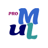

<div class="back">
  <div class="row mainrow">
    <div class="col-lg-4 col-sm-12 left-bar">
      
    </div>
    <div class="col-lg-4 col-sm-12 getStartCol">
      <div class="mainbox">
        <div class="startButton font-sans" routerLink="/workspace">
          Get Started
        </div>
      </div>
    </div>
    <div class="col-lg-4 col-sm-12" style="width: 100%; padding-left: 10px;" >
      <div class="footer font-sans">
        Create the UML diagram and let the language return as you like.
      </div>
    </div>
  </div>
</div>
